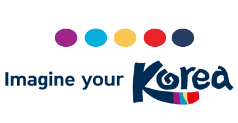
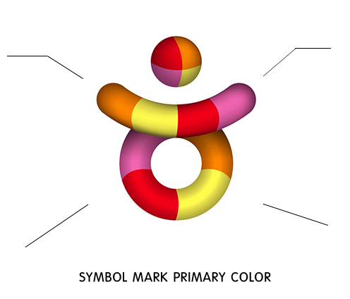
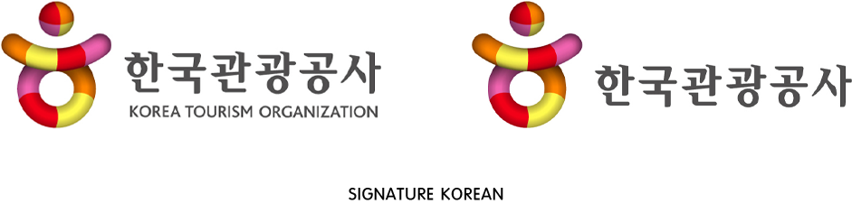
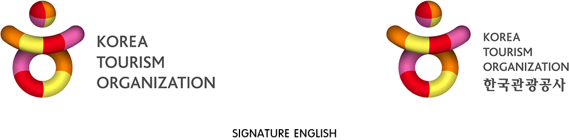

안녕하세요!
여행하기 좋은 나라를 만드는
글로벌 관광 선도기관
한국관광공사
Diverse, Vibrant,
Creative, Intriguing
경영전략
-
설립 목적
관광을 통해 국가 경제 발전을 선도하고 국민복지 증진에 기여한다 - 혁신목표
사회적가치와 혁신성장 동시 성과 창출로 국민에게 신뢰받는 관광 선도기관 - 전략방향
관광 생태계 디지털 전환 선도 관광산업 혁신 성장 주도 지역관광 확대 한국관광 브랜드 강화 한국형 관광 ESG실현 -
핵심가치
디지털 혁신, 산업육성, 지역상생, 글로벌 도약, 국민평가 -
미래상
여행하기 좋은 나라를 만드는 글로벌 관광선도기관 - 2026년 목표
디지털관광데이터 활용도 85만건 관광기업 성장 지원건수 4,325개 국민 지역 관광지 방문 총량 2.7억명 외래객 한국관광매력도 85점 국민평가 최고 등급 -
현신방향
지역상생 선도로 사회적 가치 성과 창출 디지털 전환 및 기업지원으로 경제활력 제고 건전한 기관 운영 및 국민신뢰 제고 -
10대 과제
디지털 기반 고객 경험 혁신 관광기업 육성 및 경쟁력 강화 지역관광 콘텐츠 발굴 및 육성 한국관광 브랜드 가치 제고 친환경 기반 상생여행 확산 관광산업 디지털 역량 강화 관광 미래 인재 양성 지역관광 서비스 인프라 확충 여행객 맞춤형 마케팅 강화 윤리청렴 경영 실천
- 사회적가치 대표사업 좋은 일자리(관광벤처 발굴, 육성) 모두의 관광(근로자 휴가 지원사업) 안전한 국민(안전하고 꺠끗한 걷기길 조성) 상생과 성장(강소형 잠재관광지 발굴) 공정한 사회(열린 관광지 나눔여행)
- DIVERSE 전통과 현대가 조화되어 다양한 즐길거리가 가득한 한국 VIBRANT 지치지 않는 생기와 활력이 느껴지는 한국 CREATIVE 새로운 가치창출하는 한국 INTRIGUING 흥미를 자극하고 유발하는 한국
- 수준 높은 문화관광 k-Food 사계절 다양한 식재료와 요리법으로 즐기는 독특한 먹거리 K-Wave k-pop,k-drama k-movie등 독창적인 한국만의 컨텐츠 k-spirit 한국과 한국인의 무한한 창의성과 열정 k-place 전통과 현대적인 감각이 조화를 이루는 한국만의 신선한 명소 k-style 트렌드 세터의 마음을 셀레게 하는 세련되고 특별한 생활방식
- 
CEO
안영배
생년월일
1962년 8월 17일
학력
1989서울시립대학교(도시행정학과), 학사
1981오산고등학교 졸업
주요경력
2018.5 ~ 현재한국관광공사 사장
2016 ~ 2018.5한국미래발전연구원 부원장
2010 ~ 2013노무현재단 사무처장
2006 ~ 2008국정홍보처 차장
2004 ~ 2006대통령비서실 국정홍보비서관, 국내언론비서관
2003 ~ 2004대통령비서실 행정관
2001 ~ 2003미디어오늘 편집국장

안녕하십니까?
1960년대 국내 관광산업의 태동기부터 오늘까지
반세기가 넘는 역사를 지닌 공공기관인
한국관광공사는척박한 환경에서 관광산업의
기반을 튼튼히 닦았던 과거를 넘어,
오늘날에는 관광을 통한 국민의 삶의 질 개선과
국민경제의 주역으로 발돋움하고자 노력하고 있습니다.
한국관광공사는 관광을 미래 성장동력으로 이끌고
국민의 삶의 질 향상에 기여한다라는 미션을 가지고,
△지역관광 성장견인, △고품질 관광 경쟁력 확보,
△관광산업 융복합 확대, △사회적 가치 창출을 통한
균형성장 등을 4대 전략방향으로
삼아 관광산업을 선도하는 다양한
사업들을 수행하고 있습니다
하지만 이런 모든 일들도 공사의 소중한 고객
여러분의 협력 없이는 할 수 없습니다.
여행이 우리에게 주는 대표적인 가치 중
하나가 '나눔' 이듯, 공사는 앞으로
지자체, 업계, 학계, 유관기관 등
다양한 고객들과 교감하고 공유, 협업하면서
관광산업에 새로운 바람을 일으키겠습니다.
여러분들의 변함없는 관심과 적극적인 참여를 바라오며,
한국관광공사는 지속적으로 국민에게 신뢰받는
공공기관이 되고자 오늘도 최선을 다할 것입니다.
감사합니다.
한국관광공사 사장 안영배
HISTORY


CI
- 두 팔 벌려 환영하는 사람의 형상 한국관광공사의 머리글자 ‘ㅎ’통하여 상징화 미소를 뜬 한국인의 모습을 표현
- 생명력 있는 컬러 사용으로 공사의 적극적이고 진취적인 기상을 의미
- 지구를 상징하는 구형태 전세계에 한국문화를 전파하는 한국관광공사의 역활을 표현
- 몸을 형상화한 하단의 원은 완벽한 화합과 영원을 상징




한국관광공사의 심볼 마크는 공사를 대표하는 모든 매체에 사용되어 공사의 이미지를 전달하는 중요한 역할을 담당하므로 최대한 형태와 색상을 유지하도록 한다. 심볼 마크의 최소 사이즈 규정은 재현성을 고려하여 정한 것으로 최소 사이즈 이하의 사용은 금한다. 심볼 마크의 재생은 원칙적으로 CD-Rom에 수록된 원고를 사용해야 하나, 컴퓨터 출력이 불가능한 대형 크기의 경우에는 본 항이 제시 된 그리드에 준하여 정확히 작도해야 한다. 한국관광공사 CI 상표권은 한국관광공사에 귀속되며, 공사 내 부서/지사와 사전협의 없는 무단 사용을 금합니다